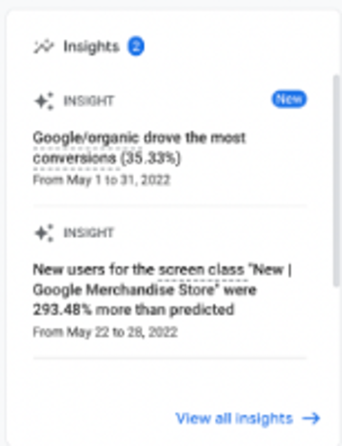

Google Analytics Report
2.1 An Introduction
Before analyzing the report, we would like to explain what Google
Analytics Report is. We will answer that it is a powerful tool offered
by Google that lets us to insight into our customers anytime they
access our website. Each action applied by our User or potential
customer is registered as a fountain of data, and with that vital
information, we can help define strategies in our business. This tool
is a shovel that will help us get information about the users'
behavior and how they react to our website or web apps. If we know
their behavior better, we can optimize our content, attract even more
customers, and increase our revenue, which is our primary goal.
Although our first experience will be analyzing report Snapshot,
Google Analytics offers precise measuring, reporting, and exploring
steps created with JavaScript coding (called Global Site tag-gtag.js )
implemented in our HTML files and Google developed it.
But now we are going to see how does it work technically? So we start
with our image, which shows that Google Analytics Snapshot is a fancy
visualization report with multiple features.
2.2 Snapshot Report and its interpretation
Concerning Report snapshots, we can even interpret what is happening
on our website in real-time. We see information about our users, where
they come from, what page they're on right now, what they click, and
many other data points. In reality, we have a summary of what is
happening on our website with the Users. We will divide the picture
into six parts to better understand it.
2.2.a Our section on the top-left is essential
information about the User. We can define the User as a person who
accesses our website using a PC, laptop, o any device. Then, in this
section, we have some metrics about Users.
The first value, 99K Users, is the total number of
people who checked our website over a period called the range date
of the report. In our case, that period is between May 08th to Jun
10th.
The second value is 86K New Users who saw our
website for the first time. So, we can interpret that 86% of our
Users accessed the website for the first time, and 14% have accessed
it more than once.
A critical definition is the
Average Engagement Time; the average time for which
the users navigate or interacting with the content on our website.
For our example, currently is 1 minute and 37 seconds.It is one of
the most critical, because we need to understand what we can do in
that period if we can reach a economic conversion.
With a universe of 99K Users and almost one month of range date, it
generated $234K. First, however, we must compare it with other range
dates to recognize it as a bad or good period.
Finally, we observe a trend line (a graphic) of the last 30 days
that daily shows a minimum and maximum Users (approximately 3K and
5K Users, respectively, in our case with a sinusoidal pattern. We
observe high and low levels, but it keeps a range of users.
An interesting question is why the number of Users is more
significant than the number of New Users because the first variable
is the total summation of the old and new users. We can calculate
the percentage of new and old users with both values as we did.
2.2.b Our section on the top-center is the best
reference about an interesting concept called real time. It is
designed for 3 sections, a absolute value of number of users, an
histogram and a demographic histogram with tops countries who visit
our website in the last 30 minutes.
The first number. 82. is how many users have
accessed our website in the last 30 minutes.
Then, with more details, we can see a histogram that has 30 columns
with a smooth distribution. Each column shows how many Users visited
our website in one minute.
Finally, the top four countries with the highest accessing our
website with their respective number of Users. First position, USA,
Mexico, Indonesia, Canada, and China.
2.2.c Our section on the top-right is called Insight.
The most important part is related to the metric of the Website
conversion. Website conversion is an event that is valuable for our
business and helps us to reach the revenue. Website conversion happens
when someone completes a predetermined and desired action on our
Website, from signing up for a newsletter, sharing information on
social media, or buying a product.

Our first indicator explains that we got a 35.33% conversion
conversions with Google Engine.
The second indicator shows that we reached a better projections with
respect the original prediction has been planified previously with
Google Merchandise Store.This case was a 293.48%.
2.2.d Our section on the lower-left started with a
question provided by Google
"Where do our New Users come from? "
which should help us get the insights.There are kind of navigating in
our analysis.
Our first channel called Direct, it means that the Users entering
the URL related our WebSite on the Browser.Also it could be linked
with some Microsoft Office document or a PDF file.
Our second channel grouping is Organic Search where people finding
the website on Google. However, it also include other search
engines, like Bing.
The third channel is Display, when someone cliks on an Ad that we
run on another website. Banner ads on blogs and image adds on news
site are some common generators of display traffic.
Our fourth channel is Cross-network, with includes a traffic between
all of type the channel that we explained here.
Our fifth is The Paid Search Channel, it includes traffic from
Google Ads and let us access to our website.
The sixth channel is Paid Video when a user clicks on paid video ads
and lands on our website straigthfoward.
Our seventh channel is Referral which is reported when someone
clicks through from another website that has a hyperlink with our
website. For example, if someone links to our website in a blog
post.
2.2.e Our section on the lower-right is specifically
a demographic report. We can see how the users have been located
around the world.
The first panel shows a world map with null, minimum, and maximum
values related to the distributed users worldwide.
The second panel shows the top 6 countries in the world with the
most frequent users with their respective number of Users.
Observations. We know we can see the users on Google
Analytics Snapshot the most general information in real-time. However,
if we want to get information about the number of Users using mobile
devices to access our Website, we need to take another report. The
name of the report is Tech-Tech overview. For more details, check the
following image in its lower level.